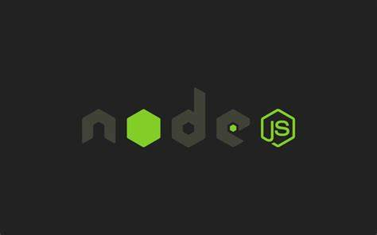

Node.js 介绍

为什么学习Node.js
- 企业需求
- 具有服务端开发经验
- 前端 front-end
- 后端 back-end
- 全栈开发工程师
- 全干
- 基本的网站开发能力
- 服务端
- 前端
- 运维部署
- 多人社区
Node.js 是什么
- Node.js 是一个基于 Chrome V8 引擎的 JavaScript 运行环境。
- 不是一门语言
- 不是库，不是框架
- 是一个 JavaScript 运行时环境
- 可以解析和执行 js 代码
- 以前只有浏览器可以解析执行 js
- 现在js可以完全脱离浏览器来运行
浏览器中的 js
- EcmaScript
- 基本的语法
- if
- var
- function
- Object
- Array
- EcmaScript
BOM
DOM
- Node.js中的js
- 没有 BOM/DOM
- EcmaScript
- 服务端不处理页面
- 在Node这个js执行环境中为js提供了一些服务器级别的操作 API
- 例如文件的读写
- 网络服务的构建
- 网络通信
- http 服务器
- 等处理。。
- 构建于 Chrome V8 引擎之上
- 代码只是又特定格式的字符串而已
- 引擎可以认识它，引擎可以解析和执行
- V8 是目前公认的解析执行js代码最快最高效的
- Node.js 的作者把 Chrome 中的 V8 引擎移植了出来，开发了了一个独立的js运行时环境
- Node.js 使用了一个事件驱动、非阻塞式 I/O 的模型，使其轻量又高效。
- event-driven 事件驱动
- non-blocking I/O model 非阻塞IO模型（异步）
- lightweight and efficient 轻量与高效
- Node.js 包生态系统，npm (node package management) 是世界上最大的开源库生态系统
- 绝大多数js相关的包都存放在了 npm 上，这样做的目的是为了让开发人员更方便的去下载使用
npm install jquery
Node.js 能做什么
Web服务器后台
命令行工具
- npm(node)
- git(c 语言)
- hexo(node)
- ……
游戏服务器/接口服务器
对于前端开发工程师来讲，接触 node 最多的是它的命令行工具
- 自己写的不多，主要是使用别人第三方开发的
- webpack
- gulp
- npm
预备知识
- HTML
- CSS
- JavaScript
- 简单的命令行操作
一些资源
- 官方API文档：http://nodejs.org/dist/latest-v6/docs/api/
- CNODE社区：http://cnodejs.org
- 《深入浅出Node.js》
- 朴灵
- 偏理论，几乎没有任何实战性内容
- 理解底层原理有帮助
- 《Node.js 权威指南》API 讲解
学习 Node.js 你可以学到
B/S 编程模型
- Browser-Server
- back-end
- 任何服务器技术这种BS编程模型都是一样的，和语言无关
- Node 只是一个工具
模块化编程
- RequireJS
- SeaJS
@import('文件路径')
Node常用API
异步编程
Express 开发框架